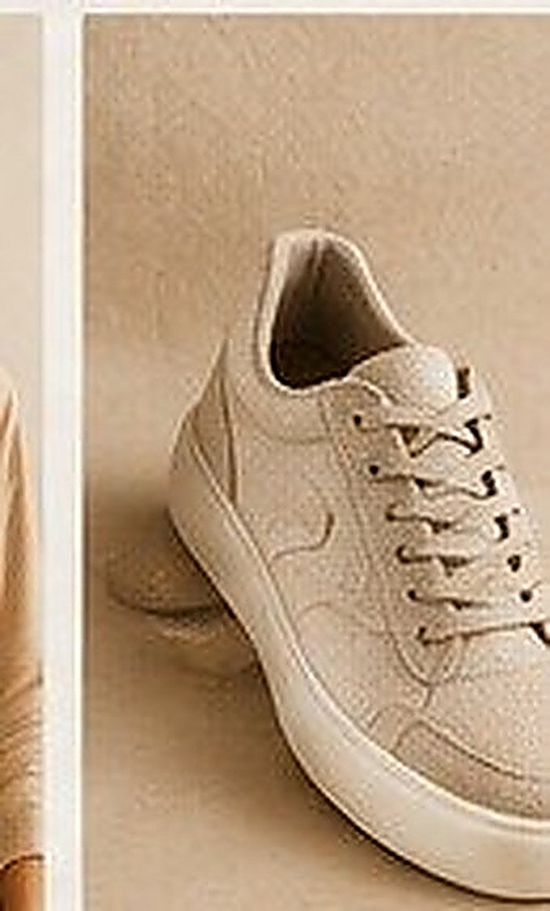
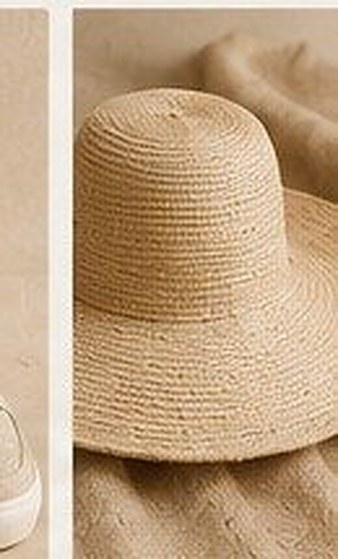
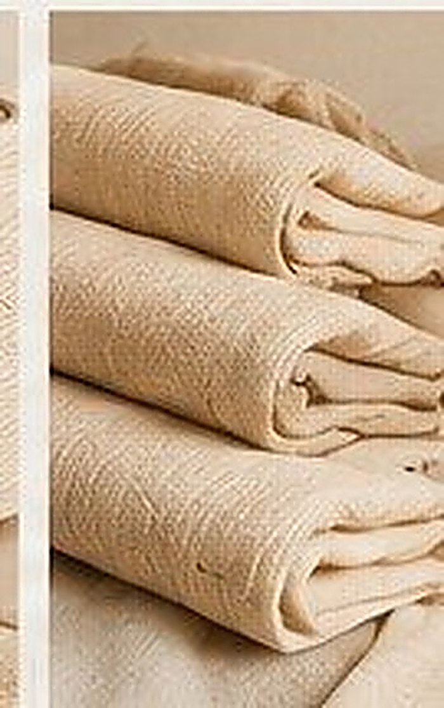
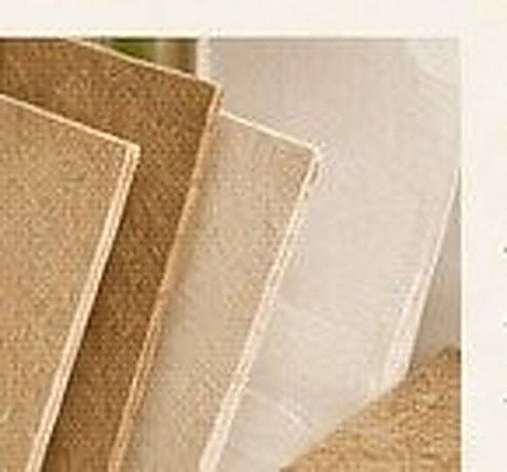
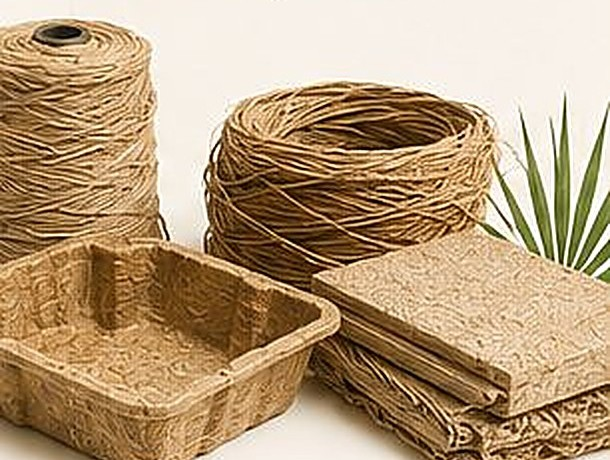
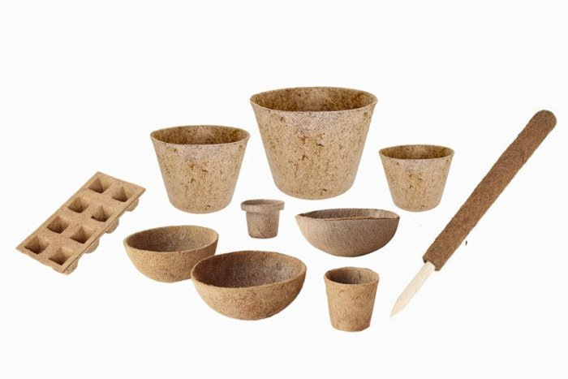

Market TYPY
Moda Ecológica
Fios, tecidos e acessórios feitos de fibra natural brasileira — a mesma resistência do sintético, com origem 100% renovável.

Fibras Naturais
Matéria-prima têxtil de bananeira e curauá, base de toda a linha de moda TYPY.

Calçados
Tênis, alpargatas e sapatos veganos feitos com fibra natural brasileira.

Acessórios
Chapéus, cintos e complementos de moda com identidade ecológica.

Bolsas
Bolsas de uso diário com o caimento e a resistência do sintético, 100% natural.

Carteiras
Pequenos acessórios de couro vegetal e fibra natural para o dia a dia.

Mochilas
Mochilas urbanas e de viagem produzidas com fibras têxteis regenerativas.
Market TYPY
Casa Ecológica
Soluções construtivas e de habitação a partir de biocompósitos de fibra natural — leves, resistentes e biodegradáveis.

Construção Ecológica
Painéis, mantas e isolantes naturais para uma construção civil regenerativa.
Market TYPY
Embalagens Ecológicas
Embalagens biodegradáveis e compostáveis, substituindo o plástico de origem fóssil em toda a cadeia de consumo.

Alimentos
Embalagens biodegradáveis para produtos alimentícios, sem plástico de origem fóssil.

Cosméticos
Potes e frascos naturais para linhas de beleza e cuidado pessoal.

Produtos de Limpeza
Embalagens compostáveis para a linha de limpeza doméstica sustentável.